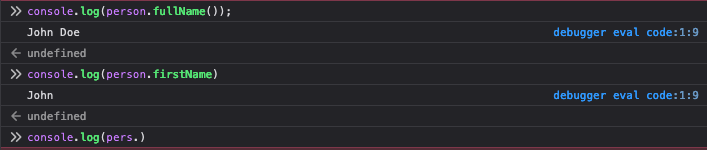

JavaScript and Ajax
- JavaScript and AJAX(Asynchronous JavaScript and XML) are two technologies that are commonly used together in web development .
- Javascript is a programming language that is used to add interactivity and dynamic behaviour to web pages while AJAX is a set of techniques that allow web pages to update content without requiring the entire page to be reloaded.
JavaScript
Introduction
JavaScript is a client-side scripting language that is used to enhance the functionality of web pages. It is used to create interactive effects, validate forms, and modify the content of web pages. JavaScript code is executed by the web browser, and it can be included in the HTML code of a web page or included as a separate file.
Basic Concepts
JavaScript includes many basic concepts, such as variables, data types, operators, loops, functions, and objects. Variables are used to store data, while data types define the type of data that can be stored in a variable. Operators are used to perform operations on data, while loops are used to repeat a set of instructions. Functions are used to group together a set of instructions, and objects are used to represent real-world objects and their properties.
Variables
In JavaScript variables are used to store data of different types, and the datatype of a variable
can change during runtime. Varirables are declared using the keywords var, let or const.
Data Types
- Primitive data types - These include:
- number - for both floating-point and integer numbers.
- string - for text values.
- boolean - for true/false values.
- null - for the absence of any object value.
- undefined - for the absence of any value.
- Complex data types - These include:
- object - for more complex data structures which can store a collection of values.
- function - for code that can be invoked later.
- Special data type - These Include
- symbol - for creating unique identifiers for objects
Loops
JavaScript loops can be used to repeat a block of code multiple times, and they can be used in conjunction with HTML to add dynamic functionality to a web page. Here are some examples of JavaScript loops and how they can be used with HTML:
- for loop: a for loop can be used to execute a block of code a specified number of times. For example, the following code uses a for loop to create an ordered list of numbers in an HTML file:
- while loop: a while loop can be used to execute a block of code while a certain condition is true. For example, the following code uses a while loop to create a dropdown list of states in an HTML file:
- forEach loop: a forEach loop can be used to execute a block of code for each element in an array. For example, the following code uses a forEach loop to create a list of colors in an HTML file:
<!DOCTYPE html>
<html>
<body>
<ol id="numbers"> </ol>
<script>
var i;
for (i = 1; i <= 10; i++) {
document.getElementById("numbers").innerHTML += "<li>" + i + "</li>";
}
</script>
</body>
</html>
<!DOCTYPE html>
<html>
<body>
<select id="states"></select>
<script>
var states = ["Alabama", "Alaska", "Arizona", "Arkansas"];
var i = 0;
while (i < states.length) {
var option = document.createElement("option");
option.text = states[i];
document.getElementById("states").add(option);
i++;
}
</script>
</body>
</html>
<!DOCTYPE html>
<html>
<body>
<ul id="colors"></ul>
<script>
var colors = ["red", "green", "blue"];
colors.forEach(function(color) {
var li = document.createElement("li");
li.textContent = color;
document.getElementById("colors").appendChild(li);
});
</script>
</body>
</html>
Functions
In JavaScript, a function is a block of code that can be defined and executed independently. Functions are typically used to perform a specific task or calculation and can take input parameters and return output values. Here are the steps to defining a function in JavaScript:
- Use the function keyword followed by the name of the function.
- Define any required parameters inside parentheses after the function name.
- Write the code that you want the function to execute inside the curly braces.
- (Optional) Use the return keyword followed by a value if you want the function to return a value.
To create a function, we use function() declaration, like:
function name( ){
// function...body
}
// function example
function displayMessage( ) {
document.write(“Welcome to JavaScript”);
document.write(“Welcome to JavaScript”); }
<script>
function sum(a, b) {
return a + b; }
let result = sum(5, 10);
alert( result );
</script>
RESULT
Objects
- In JavaScript, objects are a fundamental data type that represent a collection of related data and functionality.
- Objects in JavaScript are collections of key-value pairs, where the key is a string and the value can be of any type, including other objects, arrays, functions, and primitive types.
- Objects can provide a way to organize and structure complex data and functionality in a manageable and efficient way.
You can create an object in JavaScript using either object literal notation or the object constructor function. Here is an example of an object created using object literal notation:
var person = {
firstName: "John",
lastName: "Doe",
age: 25,
fullName:
function() {
return this.firstName + " " + this.lastName;
}
};
Possible outputs depending on the Developer's request
Controlling JavaScript Execution:
- JavaScript code can be executed in different ways, such as when a user clicks a button, when a page loads, or when a user submits a form.
- JavaScript can be included in the HTML code of a web page using the <script> tag, and it can also be included as a separate file.
- JavaScript code can be executed synchronouslyor asynchronously.
- Synchronous execution means that the codeis executed in a sequential order, while asynchronous execution means that the code is executed in a non-sequential order.
- When a button is clicked: You can use an event listener to execute JavaScript code when a button is clicked. Here's an example:
- HTML:
<button id="myButton">Click me</button>
-
JavaScript:
const buttonElement = document.getElementById('myButton'); buttonElement.addEventListener('click', function() { // execute some code here });
- When a page loads: You can execute JavaScript code when a page loads by adding your code to the window.onload event. Here's an example:
- HTML:
<body>
<!-- Your page content here -->
<script src="your-script.js"></script>
</body>
- JavaScript(in "your-script.js"):
window.onload = function() {
// execute some code here
};
- JavaScript(in "your-script.js"):
- When a form is submitted: You can use an event listener to execute JavaScript code when a form is submitted. Here's an example:
-
HTML:
<form id="myForm">
<!-- Your form fields here -->
<input type="submit" value="Submit">
</form>
-
JavaScript:
const formElement = document.getElementById('myForm');
formElement.addEventListener('submit', function(event) {
event.preventDefault(); // prevent the default form submit behavior
// execute some code here
});
Miscellaneous Features:
- JavaScript includes many miscellaneous features, such as error handling, debugging, and regular expressions.
- Error handling is an essential aspect of any programming language, including JavaScript. In JavaScript, errors can occur due to various reasons, such as invalid input, network failures, or unexpected behavior. Here are some ways to handle errors in JavaScript:
-
try-catch Block:
The try-catch block is used to handle synchronous errors in JavaScript. The try block contains the code that might throw an error, and the catch block is used to handle the error. If an error occurs in the try block, the catch block is executed, and the error is caught, preventing it from causing the program to crash.
Example:
try {
// Code that might throw an error
}
catch (error) {
// Handle the error
}Function that uses try and catch to handle errors in JavaScript:
function divide(a, b) {
try {
if (b === 0) {
throw 'Error: Cannot divide by zero'; // throws an error if b is zero
} else {
return a / b; // returns the result of a divided by b
}
} catch (error) {
console.log(error); // logs the error message
return null; // returns null if there is an error
}
}
-
Promise.catch():
The Promise.catch() method is used to handle asynchronous errors in JavaScript. When a Promise is rejected, the catch() method is called, and the error is caught and handled.
Example:asyncFunction()
.then(result => {
// Handle the result
})
.catch(error => {
// Handle the error
});
-
throw Statement:
The throw statement is used to throw custom errors in JavaScript. You can create a new instance of the Error object and throw it to indicate an error in your code.
Example:
function divide(a, b) {
if (b === 0) {
throw new Error("Cannot divide by zero");
}
return a / b;
}
try {
divide(10, 0);
} catch (error) {
console.log(error.message); // Output: Cannot divide by zero
}
window.onerror Event: The window.onerror event is fired when an unhandled error occurs in JavaScript. You can use this event to handle errors globally and log them to the console or send them to a server.
Example:
window.onerror = function(message, source, line, column, error) {
console.log(message); // Output: Something went wrong
console.log(source); // Output: http://example.com/js/script.js
console.log(line); // Output: 10
console.log(column); // Output: 5
console.log(error); // Output: Error: Something went wrong };
- By using these error handling techniques, you can ensure that your JavaScript code is more robust and resilient to errors.
-
Debugging is used to identify and fix errors.
Debugging is an important part of the software development process, and JavaScript provides several tools and techniques to help you debug your code. Here are some common techniques for debugging in JavaScript:
-
Console.log():
The console.log() method is the most basic and widely used debugging technique in JavaScript. It allows you to print variables, objects, and other data to the console, so you can see what your code is doing.
Example:
let x = 10;
console.log(x);
Example:
In Google Chrome, you can open the Developer Tools by pressing F12 or Ctrl+Shift+I (Windows, Linux) or Cmd+Opt+I (Mac). Once the Developer Tools are open, you can navigate to the Sources tab to set breakpoints, inspect variables, and more.- Debugger Statement:
The debugger statement is a powerful debugging tool that allows you to pause the execution of your code at a specific point and inspect the values of variables and other data. When the debugger statement is encountered, the browser will open the debugger, and you can step through your code line by line. Example:
function add(a, b) {
debugger;
returna + b;
}
let result = add(10, 20);
console.log(result);
When the above code is executed, the debugger will pause the execution at the debugger; statement, allowing you to inspect the values of variables and other data. Conditional Breakpoints: Conditional breakpoints allow you to set breakpoints that only trigger when a certain condition is met. This can be useful when you want to debug a specific part of your code that is only executed under certain conditions.
Example:
let i = 0;
while (i < 10) {
i++;
console.log(i);
}
In the above code, you can set a conditional breakpoint on the console.log(i); statement and set the condition to i === 5.
This will cause the debugger to pause the execution of the code when i is equal to 5, allowing you to inspect the values of variables and other data at that point in the code.
-
Console.log():
-
Regular expressions, also known as regex or regexp, are patterns used to match character combinations in strings. JavaScript has built-in support for regular expressions, which allows you to perform powerful string manipulation and validation operations. Here's how you can use regular expressions in JavaScript:
- Creating a Regular Expression: In JavaScript, you can create a regular expression by enclosing a pattern in forward slashes (/). You can also pass a regular expression pattern as a string to the RegExp constructor.
Example:
let pattern = /hello world/;
let regex = new RegExp("hello world");
-
Matching a String:
You can use the test() method to check if a string matches a regular expression pattern. The test() method returns true if the string matches the pattern, and false otherwise.
Example:
let pattern = /hello world/;
let str = "hello world";
console.log(pattern.test(str)); // Output: true
-
Using Special Characters: Regular expressions in JavaScript use special characters to match specific patterns. For example, the dot (.) character matches any single character except newline, and the asterisk (*) character matches zero or more occurrences of the preceding character.
Example:
let pattern = /a.*z/;
let str = "abcz";
console.log(pattern.test(str)); // Output: true

-
Character Classes: Character classes allow you to match a set of characters. For example, [abc] matches a, b, or c.
Example:
let pattern = /[abc]/;
let str = "def";
console.log(pattern.test(str)); // Output: false
-
Quantifiers: Quantifiers allow you to specify how many times a character or character class should appear in the string. For example, the plus (+) character matches one or more occurrences of the preceding character.
Example:
let pattern = /a+/;
let str = "aaab";
console.log(pattern.test(str)); // Output: true
-
Groups: Groups allow you to group multiple characters or character classes together and apply quantifiers to them. For example, (abc)+ matches one or more occurrences of the group abc.
Example:
let pattern = /(abc)+/;
let str = "abcabcabc";
console.log(pattern.test(str)); // Output: true
-
Flags: Flags are used to modify the behavior of a regular expression. For example, the g flag is used to perform a global search, and the i flag is used to perform a case-insensitive search.
Example:
let pattern = /hello/gi; let str = "Hello World! hello world!";
Regular expressions can be a powerful tool for string manipulation and validation in JavaScript. By understanding the syntax and patterns of regular expressions, you can write more efficient and effective code.
console.log(str.match(pattern)); // Output: ["Hello", "hello"]
- Creating a Regular Expression: In JavaScript, you can create a regular expression by enclosing a pattern in forward slashes (/). You can also pass a regular expression pattern as a string to the RegExp constructor.
JavaScript and Form Processing:
- JavaScript can be used to validate forms and provide feedback to users without requiring the entire page to be reloaded.
- JavaScript can be used to check if a form has been completed correctly, and it can also be used to provide feedback to users if there are errors in the form.
- JavaScript can also be used to submit forms without requiring the entire page to be reloaded.
- Here are the steps to validate a form and provide feedback to users:
- Add Event Listener: Add an event listener to the form submit button to handle the form submission. You can use the addEventListener() method to add an event listener to the submit button.
Example:
Copy
let form = document.querySelector("form");
let submitButton = document.querySelector("button[type='submit']");
submitButton.addEventListener("click", function(event) {
event.preventDefault();
validateForm();
});
This code is useful when you want to prevent a form from being submitted until it has been validated. By preventing the form from submitting, you have greater control over how the form data is processed and can ensure that it meets your specific requirements before allowing it to be submitted.
-
Validate Form: Write a validateForm() function to check if the form has been completed
correctly. You can use regular expressions to validate the form inputs, such as email addresses,
phone numbers, and zip codes. If the form inputs are not valid, display an error message and prevent
the form from being submitted.
Example:
let emailRegex = /^[^\s@]+@[^\s@]+\.[^\s@]+$/;
if (!emailRegex.test(email)) {
showError("Please enter a valid email address");
return false;
}
let phoneRegex= /^\d{10}$/;
if (!phoneRegex.test(phone)) {
showError("Please enter a valid phone number");
return false;
} br Copy
function validateForm() {
let name = document.querySelector("#name").value;
let email = document.querySelector("#email").value;
let phone = document.querySelector("#phone").value;
if (!name) {
showError("Please enter your name");
return false;
}
// If all inputs are valid, submit the form
submitForm();
}
Pop-up Boxes:
-
JavaScript provides several types of pop-up boxes that you can use to display messages and prompts to users. Here's how you can use JavaScript to display alert boxes, confirm boxes, and prompt boxes:
-
Alert Boxes: Alert boxes are used to display a message to users. You can use the window.alert() method to display an alert box.
Example:
window.alert("Hello World!");
-
Confirm Boxes: Confirm boxes are used to ask users for confirmation before proceeding with an action. You can use the window.confirm() method to display a confirm box. The confirm box returns true if the user clicks the OK button, and false if the user clicks the Cancel button.
Example:
let result = window.confirm("Are you sure you want to delete this item?");
if (result) {
// Delete the item
} else {
// Do nothing
}
-
Prompt Boxes: Prompt boxes are used to ask users for input. You can use the window.prompt() method to display a prompt box. The prompt box returns the user's input as a string, or null if the user clicks the Cancel button.
Example:
let name = window.prompt("Please enter your name:");
if (name) {
window.alert("Hello, " + name + "!");
} else {
window.alert("You didn't enter your name.");
}
AJAX
Introduction
AJAX is a set of techniques that allow web pages to update content without requiring the entire page to be reloaded. AJAX uses JavaScript and XML to communicate with the server and update the content of a web page. AJAX can be used to create dynamic web applications that provide a better user experience.
Full explanation on how Asynchronous JavaScript and XML works
To understand how Ajax works, it's important to remember that it has two key components: the web browser and the web server.
The user interacts with the web browser and sends a request to the web server using JavaScript. The XMLHttpRequest object sends an asynchronous request to the server to retrieve data. When the server responds with data, the XMLHttpRequest object receives it and updates the web page dynamically with JavaScript.
AJAX-based applications often take advantage of popular programming interfaces like XML, HTML, and XSLT for data interchange and manipulation.
Some key advantages of AJAX are that it allows the creation of dynamic websites that are faster and more responsive than traditional websites that must reload the entire page with each change in content
Life without AJAX:
- In the past, web pages had to be reloaded every time a user interacted with the page, which was slow and often resulted in a poor user experience.
- Without AJAX, web pages could not
update content dynamically, and users had to wait for the entire page to reload to see
updated content.
- So Life without Ajax would mean that web pages would have to be updated using traditional methods that require the entire page to reload with each change in content. This would make web applications slower and less responsive to user actions.
-
Without Ajax, web developers would have to rely on other techniques for accessing web servers from a web page, such as server-side rendering or client-side rendering using technologies like Angular or React. These techniques can still provide dynamic content and interactivity but may not be as fast or efficient as Ajax -
Without Ajax, web developers would also need to rely more heavily on server-side processing, which could lead to increased server load and bandwidth usage -
Overall, life without Ajax would mean slower, less responsive web applications that rely more heavily on server-side processing and traditional page reloading techniques.
AJAX Coding:
- AJAX coding involves using JavaScript to create requests to the server and update the content of a web page with the response.
-
An event occurs in a web page (the page is loaded , a button is clicked)
- In the code snippet, an event is assumed to have occurred, so it just initiates the request immediately.
-
An XMLHttpRequest object is created by JavaScript
- This is shown in the first line of code where the XMLHttpRequest() object is created.
-
The server processes the request
- This happens on the server-side - it is not directly addressed in the code snippet.
-
The server sends a response back to the web page
- This is handled by the onload event, which performs an action when the response is received.
-
The response is read by JavaScript
- This is shown in the JSON.parse(xhr.responseText) line, where the .responseText property of the XMLHttpRequest object is parsed from JSON to JavaScript object.
-
Proper action (like page update) is performed by JavaScript
- This is shown in the document.getElementById('my-element').innerHTML = data.message line, where the content of an HTML element (my-element) is updated with the response data.
- AJAX coding also involves handling errors and providing feedback to the user.
- AJAX can be used to create a wide range of web applications, such as chat applications, search engines, and online games.
// Create a new XMLHttpRequest object
var xhr = new XMLHttpRequest();
// Set up the request
xhr.open('GET', '/my-api-endpoint');
// Set a callback function to run when the response is received
xhr.onload = function() {
// Parse the JSON response into a JavaScript object
var data = JSON.parse(xhr.responseText);
// Update the content of a HTML element on the page with the data
document.getElementById('my-element').innerHTML = data.message;
};
// Send the request to the server
xhr.send();
Life with AJAX:
With AJAX, web pages can update content dynamically, providing a better user experience. Users no
longer have to wait for the entire page to reload to see updated content, and web applications
can be more responsive and interactive. AJAX has revolutionized web development and has enabled
the creation of many modern web applications.
Some of the benefits of life with AJAX include:
- Faster and more responsive pages: AJAX allows pages to load new content without requiring a full page refresh, which makes the pages feel faster and more responsive to user interactions.
- More dynamic and interactive user interfaces: With AJAX, developers can create more dynamic and interactive user interfaces that respond to user interactions in real-time. This has enabled the creation of rich, immersive web applications that rival desktop applications in terms of functionality and user experience.
- Reduced server load: Because AJAX allows pages to load new content without requiring a full page refresh, it reduces the load on the server by reducing the number of requests for full page refreshes.
- Improved user experience: With AJAX, users can interact with web applications in a more natural and intuitive way, without having to wait for the page to refresh every time new content is loaded.
Overall, life with AJAX has transformed the web into a more dynamic, interactive, and user-friendly place. It has enabled the creation of rich, immersive web applications that are on par with desktop applications in terms of functionality and user experience.